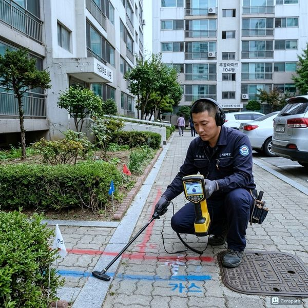
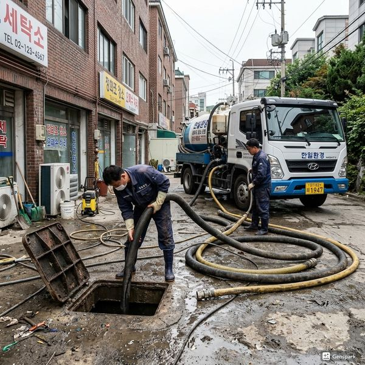
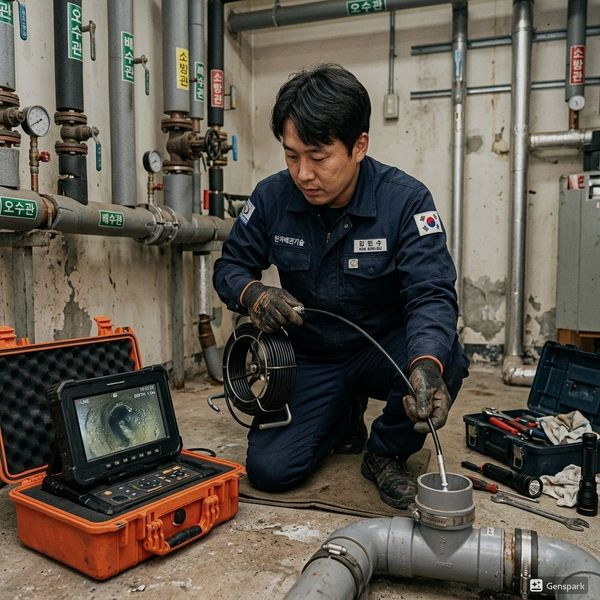

제우스시설관리 | 2025년 4월

처리기에서 배출되는 미세한 음식물 입자가 배관에 축적되면 심한 막힘을 유발합니다. 또한 유기물 분해 과정에서 발생하는 악취와 박테리아 증식이 배관과 환경을 오염시킵니다.
✅ 전용 배수관 설치 - 싱크대와 별도 배관 추천
✅ 트랩 장치 필수 - 악취 역류 방지
✅ 고압세척 계획 - 월 1회 배관 청소 필수
✅ 자동 차단 밸브 - 역류 방지 설치
한 번에 처리하는 음식물량을 제한하고, 물을 충분히 사용하여 배출하세요. 기름이 많은 음식물은 가능한 한 걸러내고 배수 투입을 피해야 합니다.
처리기 내부 청소는 제조사 지침을 따르고, 배수관은 월 1회 50도 정도의 따뜻한 물을 2~3분 흘려 보내세요. 이렇게 하면 배관 내 축적물을 줄일 수 있습니다.
아파트 규약이나 관리사무소 규정에서 음식물처리기 사용을 제한하기도 합니다. 설치 전에 반드시 확인하세요. 또한 건물의 배수 용량이 처리기를 감당할 수 있는지 검토 필요합니다.
음식물처리기의 편의성과 배관 관리는 함께 고려되어야 합니다. 정기적인 청소와 올바른 사용으로 문제 없이 사용할 수 있습니다.

